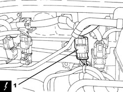
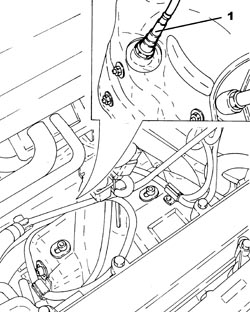
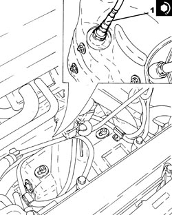
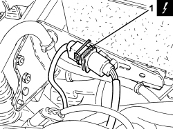
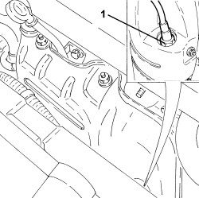

1080B92 LEFT UPPER LAMBDA SENSOR - R.R.
- Path
- Procedures > 10 ENGINE > 1080 EMISSION CONTROL SYSTEM > 1080B EXHAUST EMISSION CONTROL SYSTEM > 1080B92 LEFT UPPER LAMBDA SENSOR - R.R.
- Kind
- repair procedure (removal / refitting; the operation number is the code)
- Applies to
- engines: 2.2 JTS, 3.2 JTS; all production periods
- Interactive page
- https://sloeber94.github.io/elrnDB-aBrrSpdr/en/#/946001970
Applies to: engines: 2.2 JTS; all production periods
 Removing
Removing
 Refitting
Refitting- Make sure that the ignition key is in the OFF position, then disconnect the battery terminal (-).
Description | Connector | |
|---|---|---|
- | Battery |
1. Disconnect the electrical connection for the left upper Lambda sensor.
Description | Connector | |
|---|---|---|
1 | Lambda sensor on pre-catalyzer |

Applies to: engines: 2.2 JTS; all production periods
- Release the electrical wiring for the left upper Lambda sensor from the clip on the heat shield.
1. Using a suitable spanner, undo and remove the left upper Lambda sensor.

Applies to: engines: 2.2 JTS; all production periods
Refitting
Removing1. Position the left upper Lambda sensor in its housing and tighten it to the recommended torque.
Component | Fastening | dia | Value (daNm) | Validity |
|---|---|---|---|---|
Upper left Lambda sensor | - | M18 | (exhaust manifold side with catalytic converter) 4.1 - 5.0 | 1.9 JTS 2.2 JTS 3.2 JTS |

Applies to: engines: 2.2 JTS; all production periods
- Secure the electrical wiring for the left upper Lambda sensor using the clip on the heat shield.
- Connect the electrical connection for the left upper Lambda sensor.
- Connect the negative battery terminal.
Applies to: engines: 3.2 JTS; all production periods
Removing
Refitting1. Disconnect the electrical connection for the left cylinder head upper Lambda sensor.
Description | Connector | |
|---|---|---|
1 | Lambda sensor on pre-catalyzer |

Applies to: engines: 3.2 JTS; all production periods
1. Undo the left cylinder head upper Lambda sensor and remove it.

Applies to: engines: 3.2 JTS; all production periods
Refitting
Removing- Position the left cylinder head left upper Lambda sensor in its housing and tighten it to the recommended torque.
Component | Fastening | dia | Value (daNm) | Validity |
|---|---|---|---|---|
Upper left Lambda sensor | - | M18 | 4.1 ÷ 5.0 |
- Connect the electrical connection for the left cylinder head upper Lambda sensor.
Topics linked from this page (2)
Topics that link to this page (10)
- W001 HIGH CO EMISSIONS
- 1072C30 LEFT EXHAUST MANIFOLD - R + R AND REPLACE GASKET
- 1072C40 LEFT EXHAUST MANIFOLD HEAT SHIELD - R.R.
- 1084C10 ENGINE OIL HEAT EXCHANGER - R + R
- 1084C15 ENGINE OIL HEAT EXCHANGE MOUNT R R
- 5510C44 DETONATION SENSOR (ONE) - R+R
- E5030 PETROL ENGINE ELECTRONIC MANAGEMENT - WIRING DIAGRAM
- E5030 PETROL ENGINE ELECTRONIC MANAGEMENT - COMPONENT LOCATION
- E5030 PETROL ENGINE ELECTRONIC MANAGEMENT - WIRING DIAGRAM
- E5030 PETROL ENGINE ELECTRONIC MANAGEMENT - COMPONENT LOCATION